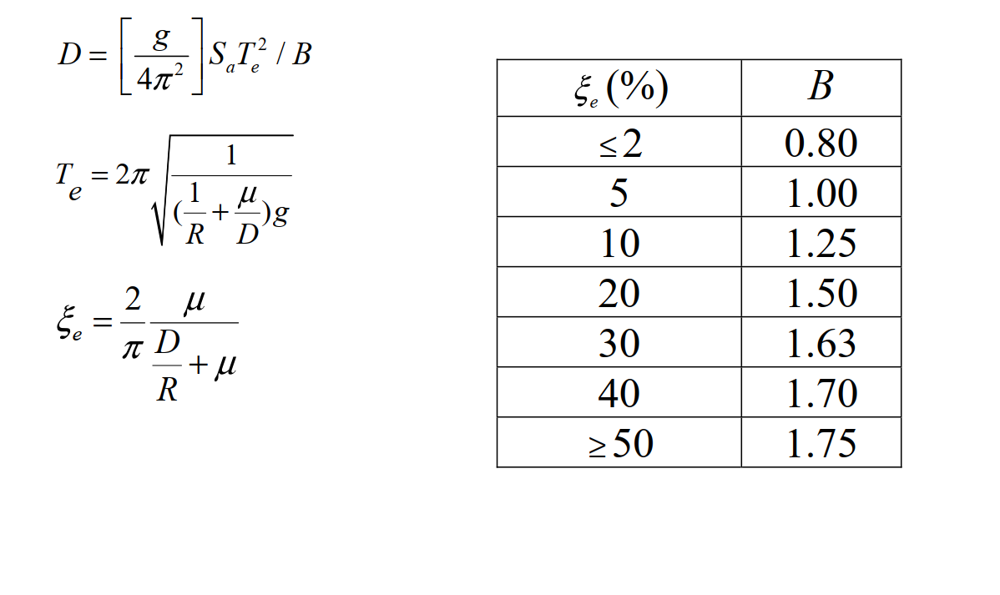
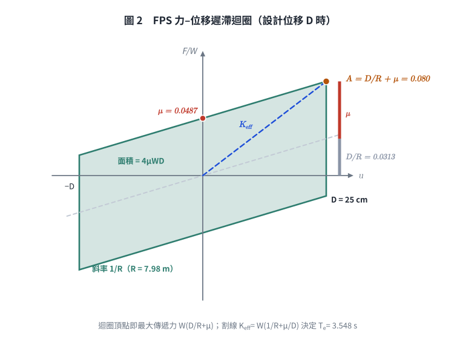
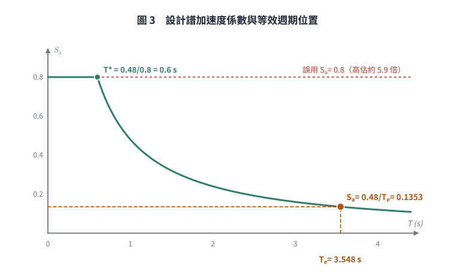
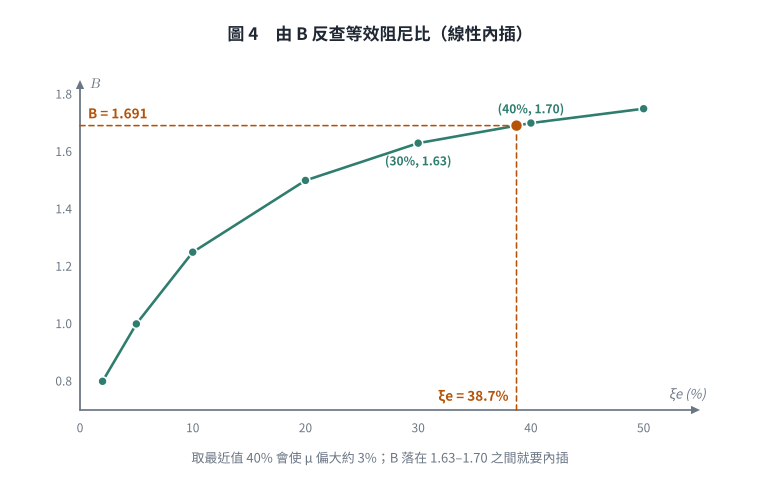

📄 題目正本：考卷原文・附圖・判讀清單（已確認）
SD-2018-4 題目正本
本檔只記錄考卷上寫了什麼、圖上畫了什麼，不含任何解法。解析見同資料夾
SD-2018-4.md。
判讀清單經使用者確認前，狀態為「待確認」；確認後本檔原則上不再修改（改動須回考卷原圖並記 log）。
| 項目 | 內容 |
|---|---|
| 考卷 | raw/exams/SD-2018_結構動力分析與耐震設計.pdf，第 2 頁（頁次 2－2），第四題 |
| 考年 | 2018（民國107年）專技高考結構工程技師「結構動力分析與耐震設計」 |
| 配分 | 25 分 |
| 附圖 | 無結構附圖；SD-2018-4-fig-1.png 為考卷「提示」的三條公式與 $\xi_e$–$B$ 表（舊擷取，完整、清晰，沿用） |
| 判讀狀態 | 已確認（2026-11-16，使用者授權依 Claude 建議）（原轉錄：2026-11-16；PyMuPDF 110 dpi 整頁＋300 dpi 局部放大，PDF 文字層核對原文；盲讀於開啟解析前完成） |
1. 考卷原文（逐字）
四、一隔震結構其上部結構假設為剛體，而設計水平譜加速度係數表示為：「$S_a=0.48/T$，$S_a\le0.8$ ，$T$ = 結構週期」。隔震系統之設計目標訂為：設計位移 $D$ = 25 cm，傳遞設計水平加速度 $A$ = 0.08 $g$，$g$ = 980 cm/sec²。若隔震系統採用摩擦單擺支承（friction pendulum bearing），試求隔震支承之曲率半徑 $R$ 及摩擦係數 $\mu$。（25 分）
提示：
2. 考卷給的公式、附表與參數
「提示」照錄（考卷以向量公式排版）：
$$D=\left[\frac{g}{4\pi^2}\right]S_aT_e^2/B$$
$$T_e=2\pi\sqrt{\frac{1}{\left(\dfrac{1}{R}+\dfrac{\mu}{D}\right)g}}$$
$$\xi_e=\frac{2}{\pi}\,\frac{\mu}{\dfrac{D}{R}+\mu}$$
| $\xi_e$ (%) | $B$ |
|---|---|
| ≤2 | 0.80 |
| 5 | 1.00 |
| 10 | 1.25 |
| 20 | 1.50 |
| 30 | 1.63 |
| 40 | 1.70 |
| ≥50 | 1.75 |
- 給定：$S_a=0.48/T$、$S_a\le0.8$；$D=25$ cm；$A=0.08g$；$g=980$ cm/s²；支承為摩擦單擺（FPS）；上部結構剛體。
- 考卷沒有給：$A$ 與 $R$、$\mu$ 的關係式（提示只有 $D$、$T_e$、$\xi_e$ 三式）、$B$ 表的內插方式、上部結構重量、支承數量、規範版本。
- 卷首注意事項：㈠可以使用電子計算器。㈡不必抄題，作答時請將試題題號及答案依照順序寫在試卷上，於本試題上作答者，不予計分。㈢本科目得以本國文字或英文作答。考試時間：2 小時。
3. 附圖
本題沒有結構附圖。考卷「提示」的公式與表格擷取如下：

證據圖 SD-2018-4-fig-1.png（考卷提示公式與 B 係數表）
4. 判讀清單
| # | 項目 | 判讀 | 圖上／題文依據 | 把握 |
|---|---|---|---|---|
| 1 | 「傳遞設計水平加速度 $A=0.08g$」 | 設計位移 $D$ 時上部結構所受（支承傳遞）的水平力除以重量，即 FPS 力–位移關係 $F/W=D/R+\mu$ 在 $D$ 處的值 $=0.08$。定案：$D/R+\mu=0.08$。理由：剛體上部結構加速度＝支承水平力／質量；提示 $T_e$ 式即由 $K_e=W(1/R+\mu/D)$ 而來，二者一致 | 題文；提示 $T_e$ 式分母 $(1/R+\mu/D)g$ | 不確定（影響答案；依 Claude 建議定案） |
| 2 | $B$ 表內插 | 考卷沒有給內插方式。定案：表列值之間線性內插 | 提示表格只有離散值 | 不確定（影響答案小；依 Claude 建議定案） |
| 3 | $S_a$ 單位 | 「設計水平譜加速度係數」，以 $g$ 的倍數表示（無因次），提示 $D$ 式再乘 $g$ | 題文「係數」；提示 $D=[g/4\pi^2]S_aT_e^2/B$ | 確定（解讀） |
| 4 | $S_a$ 式中的 $T$ | 代入隔震系統有效週期 $T_e$ | 題文「T = 結構週期」；提示 $D$ 式用 $T_e$ | 確定（解讀） |
| 5 | $S_a\le0.8$ | 上限 0.8（$T\le0.6$ s 時為平台） | 題文 | 確定 |
| 6 | 單位 | $D$、$R$ 用 cm，$g=980$ cm/s² | 題文 | 確定 |
| 7 | 上部結構 | 剛體（單自由度，隔震層變形＝$D$） | 題文「上部結構假設為剛體」 | 確定 |
| 8 | 所求 | 曲率半徑 $R$、摩擦係數 $\mu$ | 題文 | 確定 |
| 9 | 考卷沒有給 | 結構重量、支承數量、$A$ 的定義式、$B$ 內插方式、規範版本 | 題文 | 確定 |
轉錄：2026-11-16（SD-U3-2 題目正本推廣・組 U3-2-G4）
確認：2026-11-16 使用者授權依 Claude 建議確認（SD-U3-2 組 U3-2-G4，關卡一）
考題編號：SD-2018-4
主分類： SD-U3-2 隔減震原理
副分類： SD-U2-2 建築耐震設計規範
分析方法： 隔震系統等效線性化分析（摩擦單擺支承 FPS）
標籤： 摩擦單擺支承 FPS 隔震設計 等效週期 等效阻尼比 設計位移 傳遞加速度 曲率半徑 摩擦係數 阻尼修正係數B 迭代設計
1. 題目（考卷原文見題目正本）
考卷原文、公式／附表、附圖與判讀清單（已確認）見
SD-2018-4-problem.md。本節只列解題時最容易讀錯的地方與本解使用的記號；題意以題目正本為準。
常見誤讀
| 項目 | 正確判讀 | 常見誤讀 |
|---|---|---|
| 傳遞設計水平加速度 $A$ | 設計位移時支承水平力除以重量：$D/R+\mu=0.08$（判讀 #1，使用者授權依建議確認） | 只取 $D/R$（漏摩擦項），或把 $A$ 當成 $S_a$ |
| $S_a$ 式中的 $T$ | 代入有效週期 $T_e$；$S_a$ 以 $g$ 的倍數表示（判讀 #3、#4） | 用上部結構固定基座週期 |
| $B$ 表 | 表列值之間線性內插（判讀 #2，使用者授權依建議確認） | 直接取最近的表列值 |
| 單位 | $D$、$R$ 用 cm，$g=980$ cm/s²（判讀 #6） | cm 與 m 混用 |
本解記號： $A=D/R+\mu$；$T_e$ 有效週期；$\xi_e$ 等效阻尼比；$B$ 阻尼修正係數（提示表）。
2. 考題核心精神與出題者意圖 (Core Concepts & Examiner's Intent)
核心觀念：
- FPS 的力學原理：恢復力來自單擺效應（$W \cdot D/R$）＋摩擦力（$\mu W$），傳遞加速度 $A = D/R + \mu$。
- 等效線性化：以等效週期 $T_e$ 和等效阻尼比 $\xi_e$ 代替非線性 FPS 的動力特性。
- 兩個設計目標（$D$ 與 $A$）提供兩個方程式，聯立求解 $R$ 與 $\mu$；但需先透過 $D$ 公式確定 $B$，再由 $B$ 反查 $\xi_e$，進而分離 $\mu$ 與 $R$。
出題意圖：
- 測驗 FPS 力學特性的理解（傳遞加速度的物理意義）。
- 測驗隔震等效線性化三公式的綜合應用。
- 測驗反應譜區段判斷（$T_e$ 夠長，必在 $1/T$ 段）。
- 測驗從 $B$ 表格插值 $\xi_e$，再反推 $\mu$、$R$ 的計算流程。
3. 解題戰略地圖與陷阱分析 (Strategic Roadmap & Trap Analysis)
作戰順序（關鍵洞察：A 決定 $T_e$，$D$ 決定 $B$）：
- 建立傳遞加速度方程：$D/R + \mu = A = 0.08$（Eq.I）
- 由 Eq.I 得 $(1/R + \mu/D) = A/D$ → 代入 $T_e$ 公式，求得 $T_e$
- 確認反應譜區段，代入 $D$ 公式，計算 $B$
- 由 $B$ 插值查表得 $\xi_e$
- 由 $\xi_e$ 公式配合 Eq.I 解出 $\mu$
- 由 Eq.I 解出 $R$
陷阱清單：
| # | 陷阱 | 正確做法 |
|---|---|---|
| ★★★ | 不知道 $A = D/R + \mu$ 的來源，無法建立 Eq.I | FPS 最大傳遞力 $= W(D/R + \mu)$，除以 $W$ 得傳遞加速度係數 $A$ |
| ★★ | 以為 $T_e$ 需迭代才能求 | 一旦利用 Eq.I，$(1/R + \mu/D) = A/D$ 已知 → $T_e = 2\pi\sqrt{D/(Ag)}$ 直接算出 |
| ★★ | 反應譜區段判斷錯誤（用 $S_a = 0.8$） | $T_e \approx 3.55$ s $\gg$ 0.6 s（$1/T$ 段），須用 $S_a = 0.48/T_e$ |
| ★ | 由 $B$ 查表直接取最近值而不插值 | 應在 30%（B=1.63）與 40%（B=1.70）間線性插值 |
3.5 變數層次分析 (Variable Hierarchy Analysis)
最終目標
求 FPS 曲率半徑 R（m）及摩擦係數 μ（無因次）
本題關鍵公式（依計算順序）
$$\text{Step 1（Eq.I）: } \frac{D}{R} + \mu = A \quad \Rightarrow \quad \frac{1}{R} + \frac{\mu}{D} = \frac{A}{D}$$
$$\text{Step 2: } T_e = 2\pi\sqrt{\frac{D}{A \cdot g}}$$
$$\text{Step 3: } S_a = \frac{0.48}{\boxed{T_e}} \quad (T_e \gg 0.6 \text{ s})$$
$$\text{Step 4: } B = \frac{g}{4\pi^2} \cdot \frac{\boxed{S_a} \cdot \boxed{T_e}^2}{D} = \frac{0.48\,g\,\boxed{T_e}}{4\pi^2 D}$$
$$\text{Step 5: } \xi_e = \text{table}^{-1}(\boxed{B}) \quad \text{（插值）}$$
$$\text{Step 6: } \xi_e = \frac{2}{\pi} \cdot \frac{\mu}{A} \quad \Rightarrow \quad \mu = \frac{\pi A \boxed{\xi_e}}{2}$$
$$\text{Step 7: } R = \frac{D}{A - \boxed{\mu}}$$
L1：題目直接給定
| 符號 | 數值 | 說明 |
|---|---|---|
| $D$ | 25 cm | 設計位移 |
| $A$ | 0.08 | 傳遞設計水平加速度係數（以 $g$ 為單位） |
| $g$ | 980 cm/s² | 重力加速度 |
| $S_a$ | $0.48/T$（$\leq 0.8$） | 設計加速度係數 |
L2：需知識點推導
| 步驟 | 符號 | 公式／來源 | 卡關? |
|---|---|---|---|
| 建立 Eq.I | $A = D/R + \mu$ | FPS 最大傳遞力除以 $W$ | |
| 求 $T_e$ | $T_e = 2\pi\sqrt{D/(Ag)}$ | 將 $(1/R+\mu/D)=A/D$ 代入 $T_e$ 公式 | |
| 判斷 Sa | $S_a = 0.48/T_e$ | $T_e \gg 0.6$ s，在 $1/T$ 段 | |
| 求 $B$ | $B = 0.48g T_e/(4\pi^2 D)$ | $D$ 公式整理 | |
| 插值 $\xi_e$ | 線性內插 | 在 B=1.63（30%）與 B=1.70（40%）間 | |
| 求 $\mu$ | $\mu = \pi A \xi_e/2$ | 由 $\xi_e$ 公式整理 | |
| 求 $R$ | $R = D/(A-\mu)$ | Eq.I 整理 |
L3：深層知識
| 知識點 | 說明 | 卡關? |
|---|---|---|
| FPS 傳遞加速度的物理意義 | FPS 峰值水平力 $= W(D/R + \mu)$：$W/R \times D$ 為單擺恢復力；$\mu W$ 為摩擦力。兩者在最大位移時同向（摩擦力尚未反向），故為最大傳遞力 | |
| 等效剛度 $K_{eff}$ | $K_{eff} = W/R + \mu W/D$，是線性化後的割線剛度。$T_e = 2\pi\sqrt{W/(K_{eff}g)}$ | |
| 等效阻尼比的能量解釋 | $\xi_e = W_D/(4\pi W_S)$；$W_D = 4\mu W D$（矩形遲滯迴圈能量）；$W_S = K_{eff}D^2/2$（彈性應變能） | |
| $B$ 係數修正 | $B = 1$ 對應 $\xi = 5\%$（基準阻尼）；$B > 1$ 表示高阻尼使位移反應縮小 |
4. 步驟化詳細計算過程 (Step-by-Step Detailed Calculation)
Step 1：建立傳遞加速度方程（Eq.I）
FPS 在設計位移 $D$ 時，對剛性上部結構的峰值水平傳遞力：
$$F_{\max} = \underbrace{\frac{W \cdot D}{R}}_{\text{單擺恢復力}} + \underbrace{\mu W}_{\text{摩擦力}}$$
傳遞設計水平加速度：
$$A = \frac{F_{\max}}{W} = \frac{D}{R} + \mu$$
代入已知 $A = 0.08$，$D = 25$ cm：
$$\boxed{\frac{D}{R} + \mu = 0.08} \quad \cdots \text{（Eq.I）}$$
由此得：
$$\frac{1}{R} + \frac{\mu}{D} = \frac{A}{D} = \frac{0.08}{25} = 0.0032 \text{ cm}^{-1}$$
策略註解：Eq.I 是整題的突破口——它讓 $(1/R + \mu/D) = A/D$ 成為已知數，$T_e$ 不必迭代即可直接算出。

圖 2 FPS 遲滯迴圈。迴圈頂點高度就是 $A = D/R + \mu$，右側色條把它拆成單擺項 $D/R$ 與摩擦項 $\mu$；割線即 $K_{eff}$。此圖攔下兩種錯：把 $A$ 寫成只有 $D/R$（漏摩擦），以及 $\xi_e$ 的耗能面積誤用 $2\mu WD$。
Step 2：計算等效隔震週期 $T_e$
$$T_e = 2\pi\sqrt{\frac{1}{\left(\dfrac{1}{R} + \dfrac{\mu}{D}\right)g}} = 2\pi\sqrt{\frac{1}{A/D \cdot g}} = 2\pi\sqrt{\frac{D}{Ag}}$$
$$T_e = 2\pi\sqrt{\frac{25}{0.08 \times 980}} = 2\pi\sqrt{\frac{25}{78.4}} = 2\pi\sqrt{0.3189}$$
$$T_e = 2\pi \times 0.5647 = \mathbf{3.548 \text{ s}}$$
Step 3：確認反應譜區段並求 $S_a$
反應譜轉折點：$S_a = 0.8$ 時 $T^* = 0.48/0.8 = 0.6$ s
由於 $T_e = 3.548$ s $\gg$ 0.6 s，在速度控制（$1/T$）段：
$$S_a = \frac{0.48}{T_e} = \frac{0.48}{3.548} = 0.1353$$

圖 3 設計譜與 $T_e$ 位置。$T_e$ 遠在轉折點 $T^* = 0.6$ s 右側，落在 $1/T$ 段；此圖攔下誤用平台值 $S_a = 0.8$（會高估約 5.9 倍，$B$ 也跟著錯）。
Step 4：計算阻尼修正係數 $B$
代入設計位移公式：
$$D = \frac{g}{4\pi^2} \cdot S_a \cdot T_e^2 / B = \frac{g}{4\pi^2} \cdot \frac{0.48}{T_e} \cdot T_e^2 / B = \frac{0.48\,g\,T_e}{4\pi^2\,B}$$
解出 $B$：
$$B = \frac{0.48 \times g \times T_e}{4\pi^2 \times D} = \frac{0.48 \times 980 \times 3.548}{4\pi^2 \times 25}$$
$$= \frac{470.4 \times 3.548}{986.96} = \frac{1669.0}{986.96} = \mathbf{1.691}$$
Step 5：插值求等效阻尼比 $\xi_e$
查 $\xi_e$–$B$ 對照表，$B = 1.691$ 介於：
| $\xi_e$ | $B$ |
|---|---|
| 30% | 1.63 |
| ? | 1.691 |
| 40% | 1.70 |
線性內插：
$$\xi_e = 30\% + (40\% - 30\%) \times \frac{1.691 - 1.63}{1.70 - 1.63} = 30\% + 10\% \times \frac{0.061}{0.070}$$
$$\xi_e = 30\% + 8.72\% \approx \mathbf{38.7\%}$$

圖 4 $\xi_e$–$B$ 對照表的折線與內插點。此圖攔下兩種錯：直接取最近值 40%，以及把內插方向做反（由 $\xi$ 查 $B$ 而非由 $B$ 反查 $\xi$）。
Step 6：求摩擦係數 $\mu$
由 $\xi_e$ 公式整理：
$$\xi_e = \frac{2}{\pi} \cdot \frac{\mu}{D/R + \mu} = \frac{2\mu}{\pi \cdot A}$$
$$\mu = \frac{\pi \cdot A \cdot \xi_e}{2} = \frac{\pi \times 0.08 \times 0.387}{2}$$
$$\mu = \frac{0.09727}{2} = 0.0487$$
$$\boxed{\mu \approx 0.049 \quad (\approx 4.9\%)}$$
Step 7：求曲率半徑 $R$
由 Eq.I：
$$\frac{D}{R} = A - \mu = 0.08 - 0.0487 = 0.0313$$
$$R = \frac{D}{0.0313} = \frac{25 \text{ cm}}{0.0313} \approx 798 \text{ cm}$$
註：若先把 $\mu$ 進位成 0.049 再代入，會得 $R = 806$ cm；中間值宜多留一位，避免誤差累積。
$$\boxed{R \approx 8.0 \text{ m}}$$
驗算
| 驗算項目 | 計算 | 目標值 |
|---|---|---|
| $D/R + \mu$ | $25/798 + 0.0487 = 0.0313 + 0.0487 = 0.080$ | $A = 0.08$ ✓ |
| $\xi_e$ | $(2/\pi) \times 0.0487/0.08 = 0.387 = 38.7\%$ | 與插值一致 ✓ |
| $T_e$ | $2\pi\sqrt{25/(0.08 \times 980)} = 3.548$ s | — |
| $D$ | $0.48 \times 980 \times 3.548/(4\pi^2 \times 1.691) = 25.0$ cm | $D = 25$ cm ✓ |
5. 關鍵爭議點與進階探討 (Critical Issues & Advanced Discussion)
爭議一：傳遞加速度的確切定義
$A = D/R + \mu$ 代表 FPS 在最大位移 $D$ 時的峰值傳遞加速度。注意此時摩擦力與恢復力同向（在加載方向的最末端，速度趨近於零但摩擦力尚未反向）。如果定義「有效傳遞力」為有效剛度乘以位移：$K_{eff} D = W(1/R + \mu/D) D = W(D/R + \mu)$，結果相同——本質上是同一力。
爭議二：$B$ 插值 vs 直接取最近值
嚴格計算應插值（$\xi_e \approx 38.7\%$），但考場上若時間有限，取最近表格值（$\xi_e = 40\%$, $B = 1.70$）計算出 $\mu \approx 0.0503$, $R \approx 8.4$ m（$R$ 與精確解差約 5%）。注意此時回代得 $D = 24.9$ cm，已不完全滿足 $D = 25$ cm，答案須註明為近似。建議考場中先插值，若時間不足再取最近值並說明近似。
爭議三：考卷提示 $B$ 表與現行規範（2026-11-16 核對）
依根目錄規範版本規則，考卷印出的規範表格要換成現行台灣規範。現行《建築物耐震設計規範及解說》表 3-1「短週期與長週期結構之阻尼比修正係數 $B_S$ 與 $B_1$（線性內插求值）」：
| 有效阻尼比 $\xi$ (%) | $B_S$ | $B_1$ |
|---|---|---|
| ≤2 | 0.80 | 0.80 |
| 5 | 1.00 | 1.00 |
| 10 | 1.33 | 1.25 |
| 20 | 1.60 | 1.50 |
| 30 | 1.79 | 1.63 |
| 40 | 1.87 | 1.70 |
| ≥50 | 1.93 | 1.75 |
本題 $S_a = 0.48/T$ 屬長週期段（$S_{D1}/T$ 型），隔震設計位移用長週期的 $B_1$；$B_1$ 欄與考卷提示表逐列相同，且現行表也規定線性內插，所以 $\xi_e = 38.7\%$、$\mu = 0.0487$、$R \approx 798$ cm 不變。若誤用短週期 $B_S$ 欄，$B = 1.691$ 落在 $\xi$ 20%–30% 間（約 24.8%），會得到 $\mu \approx 0.031$、$R \approx 512$ cm，這是錯誤用法。
來源：國土管理署網站公布之規範第三章 3.2 節表 3-1（第九章隔震設計引用表 3-1 的 $B_S$、$B_1$）；網站檔未標示版本，以 111 年版公報核對（條文待核版本）。考卷提示的 $D$、$T_e$、$\xi_e$ 三式為 FPS 力學關係與設計位移式，題目照用；現行規範第九章設計位移式的完整形式本次未能從網站檔逐字擷取（條文待核）。
FPS 與 LRB 的設計邏輯對比
| 特性 | FPS（摩擦單擺） | LRB（鉛芯橡膠） |
|---|---|---|
| 恢復力來源 | 單擺幾何（重力） | 橡膠層彈性 |
| 設計自由度 | $R$（週期）、$\mu$（阻尼） | 橡膠勁度、鉛芯尺寸 |
| 週期與位移關係 | $T_e \propto \sqrt{R}$，與 $W$ 無關 | $T_e$ 取決於橡膠剪切模量與尺寸 |
| 自我定心 | 良好（重力驅動） | 視設計而定 |
進階：FPS 的最優設計（$R$、$\mu$ 的權衡）
本題同時指定 $D$ 與 $A$，因此沒有權衡空間：$T_e = 2\pi\sqrt{D/(Ag)}$ 被鎖定 → $D$ 公式鎖定 $B$ → 查表鎖定 $\xi_e$ → 解出唯一一組 $(R \approx 8.0\text{ m},\, \mu \approx 0.049)$。這是兩方程式兩未知數的唯一解，不是最佳化結果。
$R$ 與 $\mu$ 的取捨只在「只限制其中一項」時才存在，例如只給位移上限：
- 大 $R$（弱單擺勁度）：$T_e$ 變長、傳遞加速度降低，但位移需求增大。
- 大 $\mu$（強摩擦）：耗能多、$\xi_e$ 與 $B$ 變大、位移縮小，但傳遞加速度中的摩擦成分（$\mu$ 本身）變大，且小地震時可能不啟動滑動。
解析校核：2026-10-05（修正四捨五入累積誤差與 §5 進階論述） ｜ 圖解補繪：2026-10-05（向量圖，腳本 gen_SD-2018-4.py，可重跑）
修正日期：2026-11-16（§1 改為指向題目正本）
修正日期：2026-11-16（非勘誤）§5 補現行規範表 3-1 核對：長週期 B1 欄與考卷提示 B 表逐列相同、同為線性內插，答案不變（驗證：scripts/fixes/2026-11-16_verify_SD-2018-4.py，MISMATCHES: 0）